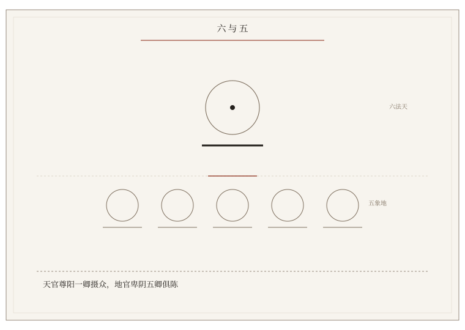

曲礼下 · 二·四十五 · 第 168 课
天子之五官：司徒、司马、司空、司士、司寇，各主五众。注「众，谓众臣也。此亦殷时制也，周则司士属司马」。
说什么事：五官之名，及其与六官之数的错落。
落在哪一层：礼。论地官之五与天官之六相对。
为何编在此位：紧接六大，一天一地，一六五一。
【经】天子之五官，曰司徒、司馬、司空、司士、司寇，典司五眾。
【注】眾，謂眾臣也。此亦殷時制也，周則司士屬司馬，大宰、司徒、宗伯、司馬、司寇、司空為六官。
【疏】向立六官，以法天之六气；此又置五官，以象地之五行也。天地五行践立，故复云「天子」，不云「建」，从天官也。又天官尊阳，故一卿以摄众；地官卑阴，故五卿俱陈也。不云「地」者，与前互也。天尊，故没其数；地卑，故明言其五也。司徒一、司马二、司空三、司士四、司寇五也。「典司五众」者，结上也。言用此上五官，使各守其所掌上之群众也……天言六典，地言五众者，互言也。但天尊，故云「典」；地卑，故云「众」也。
五官 司徒、司马、司空、司士、司寇。
五众 注「众，谓众臣也」。疏「官各有所众，如周六官之属」。
不云建 疏「不云『建』，从天官也」。六官曰建，五官不言建。
互言 疏「天言六典，地言五众者，互言也」。
司 疏「司，主也」。诸官皆云「司」，唯大宰、宗伯不云。
天子的五官是司徒、司马、司空、司士、司寇，各主其所辖的众臣。
天上六，地上五。此节与上节并列，正是一天一地的对照。疏把「六」与「五」的差说成尊卑之别：「天官尊阳，故一卿以摄众；地官卑阴，故五卿俱陈」。
第一层 数之差即象之差 六法天六气，五象地五行。数与象相配，是礼制的基本语法。六不必多于五，五是五行的全数。
第二层 一摄与俱陈 疏「天官尊阳，故一卿以摄众；地官卑阴，故五卿俱陈」。尊的那一边，可以一人统摄；卑的那一边，必须五个并列。此语极可玩味：越尊越简，越卑越繁。
第三层 不言建 六官云「建」，五官只云「天子之五官」。疏「从天官也」，谓五官附于天官之建。
第四层 司与不司 疏辨诸官皆云「司」，而大宰、宗伯不云。大宰「总主六官，不偏有所司」；宗伯所司为天地鬼神，「既尊，非人所司」。一字之有无，见职分之别。
与今日何干 一个组织里，职位名越具体，权越有限；名越虚，权越总。此理至今未变。
| 左 | 右 |
|---|---|
| 天子之五官 | 司徒、司马、司空、司士、司寇 |
| 典司五众 | 众谓众臣，非民众 |
| 六法天六气 | 五象地五行 |
| 天官尊阳 | 一卿以摄众 |
| 地官卑阴 | 五卿俱陈 |
| 天言六典，地言五众 | 互言，各举其重 |
画上下两层：上层一枚大圆，圆中一枚小点、圆下一道粗横（示一卿总摄）；下层五枚等大的小圆横排，各圆下一道细横、五道细横等高并列（示五卿俱陈）。两层之间以一条极淡的横线分隔，上层偏左、下层居中。不写文字、不画人。赭色只用在上下两层之间那条分隔线的中段一小截。
